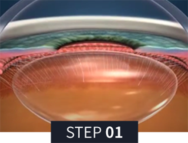
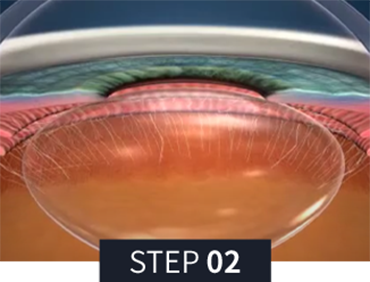
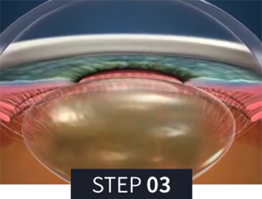

혼탁한 수정체를 제거하고 맞춤형 인공수정체를 삽입
혼탁해진 수정체에 다초점 인공수정체를 삽입하여
노안과 백내장을 동시에 교정하는 데 도움을 줄 수 있습니다.
서울새론안과는 풍부한 임상경험과 지속적인 연구를
바탕으로 환자 한 분 한 분에게 집중하여 만족도 높은 결과를
드리고자 최선을 다합니다.

60여가지 정밀 검사 진행 후
환자의 특성에 맞는 인공수정체를 선정

혼탁해진 수정체낭을 제거하기 위해
절개술을 시행

인공수정체를 삽입 후
초점이 망막에 맺힌 상태를 확인
난시 교정용 인공수정체를 삽입하여 난시,
원시, 근시 및 노안까지 한번에 교정하여
더 선명한 일상생활이 가능합니다.

월 화 목 금
am 09:00 ~ pm 06:00토 요 일
am 09:00 ~ pm 04:00점 심 시 간
pm 01:00 ~ pm 02:00수요일, 일요일, 공휴일 휴무입니다.
공휴일 있는 주는 수요일 대체진료입니다.